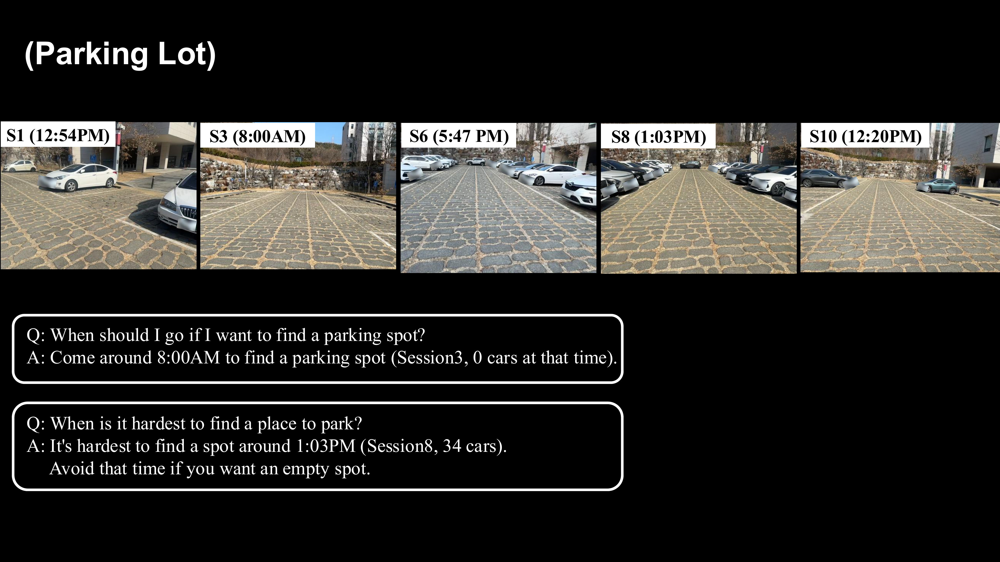

Contributions
LT-Mem Framework
A volatility-aware memory evolution framework. Update decisions are governed by a volatility-conditioned reasoning layer, optionally assisted by a constrained LLM, producing a Tri-Memory structure (Live, Delta, Meta) that preserves both current and historical object states.
LT-VQA Dataset
A dataset and evaluation suite requiring persistent object identity and structured temporal reasoning across multi-session revisits.
Token-Efficient Temporal Reasoning
Volatility-aware evolution improves long-horizon object-centric reasoning over overwrite and accumulation baselines, while reducing token consumption by up to an order of magnitude compared to vision-based approaches.
LT-mem Framework

A volatility-aware memory evolution framework. Update decisions are governed by a volatility-conditioned reasoning layer, optionally assisted by a constrained LLM, producing a Tri-Memory structure (Live, Delta, Meta) that preserves both current and historical object states.
LT-VQA Dataset
LT-VQA is a controlled multi-session dataset for evaluating long-term object-centric scene understanding. Unlike single-session VQA benchmarks, LT-VQA targets persistent cross-session object identity, event-level state transition annotation, and session-indexed temporal reasoning — enabling questions such as "Where has the green chair been across all sessions?"
Environments
Tracked Objects


Results
Quantitative Results
| Method | Event F1 ↑ | QA-Event ↑ | QA-Freq ↑ | Tokens ↓ |
|---|---|---|---|---|
| Geometric Only | 0.630 | N/A | N/A | – |
| Text-Batch | 0.460 | 0.300 | 0.267 | 1,992K |
| VLM-Batch | 0.790 | 0.680 | 0.333 | 7,152K |
| STAR | 0.420 | 0.460 | N/A | 55,622K |
| LT-Mem (Qwen2.5-3B) | 0.885 | 0.800 | 0.567 | 431K |
| LT-Mem (Gemini 2.5 Pro) | 0.910 | 0.820 | 0.600 | 438K |
On LT-VQA (Lab-S + Lab-L combined), LT-Mem achieves state-of-the-art results across all metrics. With a Gemini 2.5 Pro reasoner it reaches 0.910 Event F1, 0.820 QA-Event, and 0.600 QA-Freq, surpassing the strongest vision baseline (VLM-Batch) while consuming ~16× fewer tokens (438K vs 7,152K). Even with a lightweight local Qwen2.5-3B reasoner, LT-Mem still outperforms every baseline — showing the gain comes from the structured memory architecture, not LLM capacity.
Qualitative Results

On the Parking Lot sequence, LT-Mem aggregates per-session vehicle counts in Meta Memory to answer temporal occupancy queries (e.g., "When should I go if I want to find a parking spot?") through deterministic lookup, without additional inference.
Download
{
"session": "S6",
"object": "robot_dog",
"event": "MOVE",
"from": [-0.81, 0.43, 1.77],
"to": [-0.97, 2.52, -2.27],
"displacement_m": 4.60
}
BibTeX
If you find LT-Mem or LT-VQA useful, please cite our paper:
@inproceedings{lee2026ltmem,
title = {Volatility-Aware Spatio-Temporal Memory for Lifelong Scene Understanding},
author = {Lee, Yumin and Ju, Hyoseok and Kim, Giseop},
booktitle = {Proceedings of the IEEE/RSJ International Conference on Intelligent Robots and Systems (IROS)},
year = {2026},
}